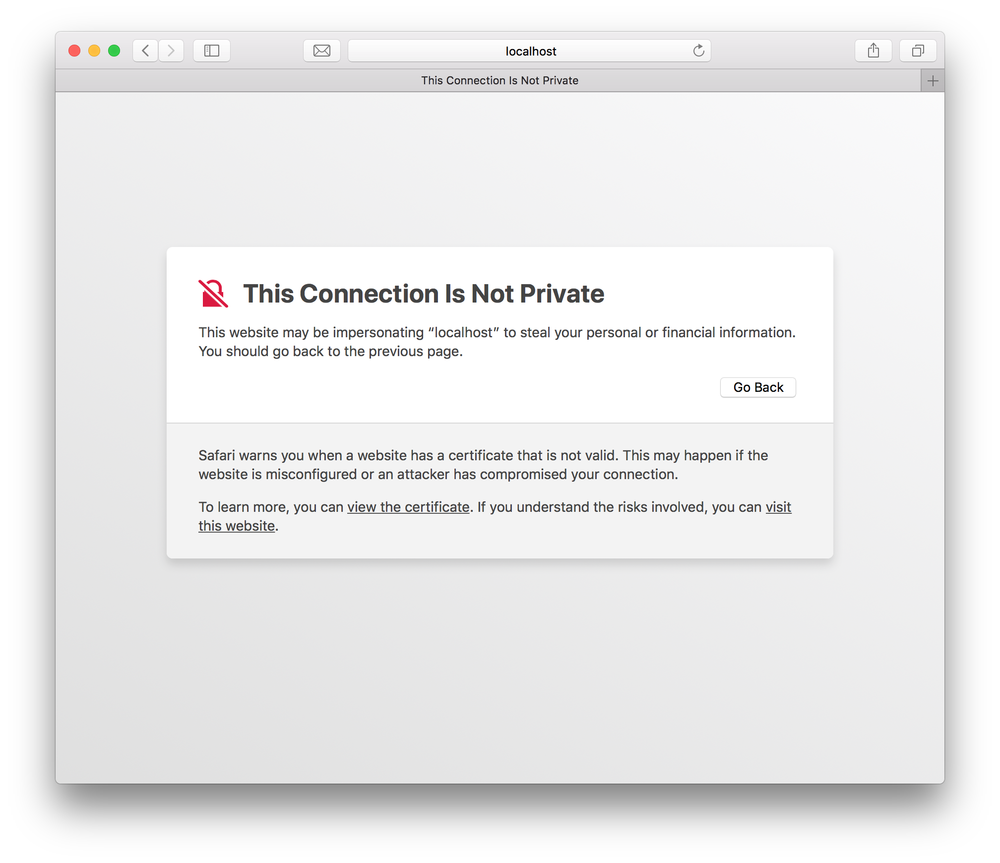
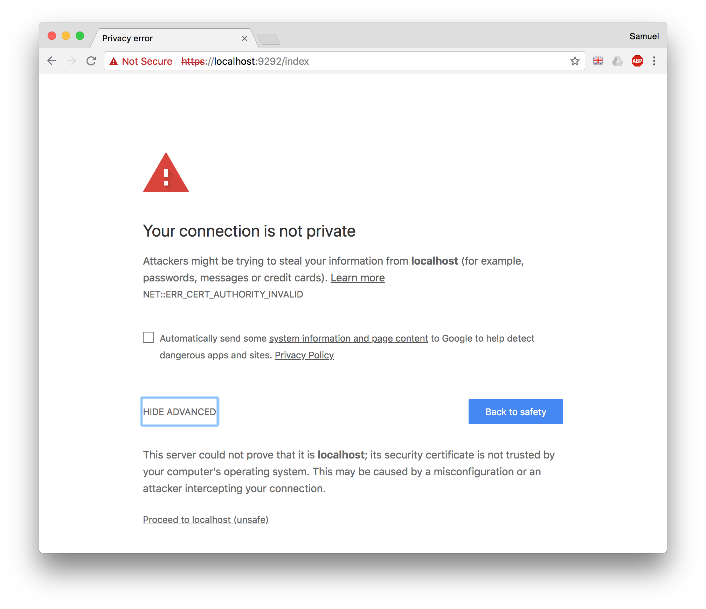

Getting Started
This guide explains how to use localhost for provisioning local TLS certificates for development.
Installation
Add the gem to your project:
$ bundle add localhost
Core Concepts
localhost has one core concept:
- A
class Localhost::Authorityinstance which represents a public and private key pair that can be used for both clients and servers.
Usage
This example shows how to generate a certificate for an SSL secured server:
require 'socket'
require 'thread'
require 'localhost/authority'
# Get the self-signed authority for localhost:
authority = Localhost::Authority.fetch
ready = Thread::Queue.new
# Start a server thread:
server_thread = Thread.new do
server = OpenSSL::SSL::SSLServer.new(TCPServer.new("localhost", 4050), authority.server_context)
server.listen
ready << true
peer = server.accept
peer.puts "Hello World!"
peer.flush
peer.close
end
ready.pop
client = OpenSSL::SSL::SSLSocket.new(TCPSocket.new("localhost", 4050), authority.client_context)
# Initialize SSL connection:
client.connect
# Read the encrypted message:
puts client.read(12)
client.close
server_thread.join
If you use Safari to access such a server, it will allow you to add the certificate to your keychain without much work. Once you've done this, you won't need to do it again for any other site when running such a development environment from the same user account.
Safari
If you use this with a web server, when you open the site in Safari:

- Click "View the certificate" to check that it is the correct certificate.
- Click "visit this website" which will prompt you to add the certificate to your keychain. Once you've done this, it should work for a long time.
Chrome
If you use this with a web server, when you open the site in Chrome:

- Click "ADVANCED" to see additional details, including...
- Click "Proceed to localhost (unsafe)" which will allow you to use the site for the current browser session.
Self-Signed Localhost
The best way to use Chrome with self-signed localhost certificates is to allow it in your chrome settings: chrome://flags/#allow-insecure-localhost.
Files
The certificate and private key are stored in ~/.localhost/. You can delete them and they will be regenerated. If you added the certificate to your keychain, you'll probably want to delete that too.